Beyond K/V Caches / 混合线性注意力模型之间的状态交接
- 作者与机构为 Jiacheng Cai、Tao Zhang、Siqi Liang、Yun Dai、Ziqian Zeng，均来自华南理工大学。
- arXiv v1 提交于 2026 年 11 月 5 日 15:00:50 UTC，北京时间当日 23:00:50。论文原文
- 本轮未核验到独立的作者实现。
对话系统可能用小模型读入历史，碰到难任务再交给大模型。如果大模型能接过已经生成的内部状态，就有机会省掉对同一段前文的重复计算。作者在混合注意力模型上试验了一次完整交接，将普通注意力缓存、线性注意力的递归矩阵和短卷积历史一同转换，再以大模型接手后的输出校准映射。
小模型已经读过一段历史，大模型仍需知道每层在同一位置留下了什么记忆。混合模型里，短卷积写入递归状态的误差会在卷积窗口滑过后继续存在，单凭缓存或张量重构距离无法判断接手后的续写质量。
1. 背景和问题
对话的累计历史是级联模型特有的计算负担。假设短请求由四十亿参数的模型接手，到了多轮复杂追问再改由二百七十亿参数的模型处理。源模型在上一阶段读过的长前缀，可以表示为文本，也可以表示为它每一层更新完后的状态。按文本交接最直接，但目标模型会重新运行整段前缀。长前缀出现在哪里，和后来输出多少 token，是两个不同问题。用户追加的提示可能很短，输出也可能只有一个候选编号，重复读前缀仍会拖长到首个响应的等待。模型路由在决策之后承担的这笔成本，会改变什么时候值得切换模型。
对于全注意力层，历史键值缓存逐 token 增长。它们来自每一层自己的投影和中间表征，即使两个模型使用同一 tokenizer，文本位置一致，也不能把一个模型的 KV 张量直接认作另一个模型的历史。论文回顾的 Cross-Model 为目标层选源层支撑，分别为键和值拟合仿射映射。CacheBridge 调整了头级支撑与拟合权重，CacheLink 则用目标模型续写产生的监督训练校正器。这几条路线已经揭示了两个问题，分别是跨模型表征如何对应，以及接收端读这些近似状态时是否按预期工作。HST 将这两个问题推广到既有全注意力又有递归的混合模型，并研究能否把部分校正折叠到已有缓存映射中。
Qwen3.5 的 Gated DeltaNet 层保留两种不同的记忆。第一种是递归状态 REC，可看成一个持续被写入的矩阵，后续查询从矩阵里读出历史线索。新 token 的键和值参与改写，衰减与写入门决定保留与更新的方式。第二种是有限长度的卷积历史 Conv，按时间顺序保存近期的投影特征。卷积从当前投影与旧槽位共同得到查询、键和值。对当前输出而言，这是局部预处理。对以后而言，键和值还要参与递归写入，因此同一个卷积扰动可以沿两条路径传播，一条影响此刻读什么，另一条影响未来还能读到什么。这也解释了为什么两种缓存的容量随序列长度变化很小，却都必须纳入交接。
从存储与时间边界看，三类状态的区别同样重要。全注意力按历史位置索引，必要时能截去末尾位置。REC 已把此前输入合成当前矩阵，后写入的内容可能覆盖较早信息，截掉全注意力尾部也无法还原早先的矩阵。Conv 是可覆盖的有限槽位，重排槽位会改变卷积滤波器读到的先后关系。如果从几个相近的时刻分别导出不同状态，目标层可以表面上成功安装张量，却在续写时用新位置读取旧递归摘要。模型切换因而要求状态和位置元数据共享同一前缀边界。恢复正确形状与恢复可继续运算的状态是两个验收条件。
作者先在原生九十亿参数模型上构造机制诊断，将边界处的 Conv 置零，然后让不同分支消费同一组真实后续 token。这项操作保持模型权重不变，也使分支避免因生成内容不同而越走越远。第 4 步测量后分别恢复原生 Conv、原生 REC 或二者，同时保留此前已受扰动的全注意力缓存。这样，哪个组件恢复会立即改变输出分布，可以从相同 token 路径上观察。
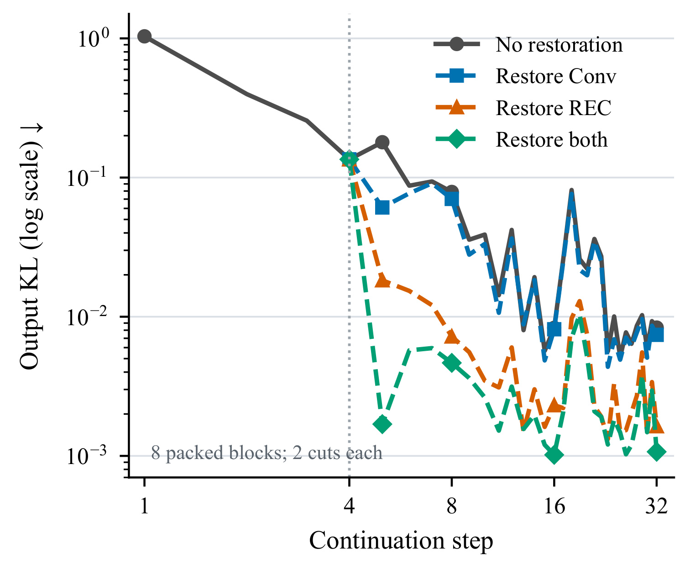
Figure 1 的横轴是续写步，纵轴是从原生分布到诊断分支分布的输出 KL，两轴都取对数。前四步各支路共享同一个置零干预，虚线之后才分流。黑线保持扰动，蓝线只恢复 Conv，橙线只恢复 REC，绿线一起恢复 Conv 与 REC。到第八步，旧的卷积槽已经被续写覆盖，只恢复 Conv 的输出 KL 仍是 0.07023，只恢复 REC 已降到 0.00721。在这个固定输入的实验里，差异支持卷积扰动曾经被写进 REC，继续影响之后的读出。绿线也没有一路归零，因为原生全注意力缓存没有被恢复，早几步的偏差仍可经另一条状态支路反馈。图中每个值先对同一块的两个切点平均，再对八个打包块平均，不能从曲线直接估计随机线上请求的失败概率。恢复用的是同一模型在相同 token 处的真实状态，属于诊断中的理想参照。它的解释范围是混合状态之间的传播路径，跨尺寸映射是否有效还要另外比较。验证时要看固定后续输入上的逐步输出和写入。一个经过数步才恶化的状态差异，可能在初次读出时完全看不出来。图中的波动也提醒我们，平均线掩盖了个别文本上延迟出现的放大现象。
对映射训练而言，第二个问题是局部拟合目标的代表性。递归矩阵的所有坐标在均方误差里按同一种方式计算，而模型的读出由当前查询方向决定，下一步写入又由键、值和门控决定。有些数值大的分量并不影响当前任务，有些能决定后续状态的小方向却很关键。即使把每一层单独的误差都压低，也无法保证这些改动与其余已安装组件相互配合。论文因此比较固定辅助方案里几个只改 REC 的重构候选，并用输出 KL 看误差是否穿过网络。
现实中的目标有三层。最低层是张量能被接收端解读，包括层号、头组、历史顺序、数据类型和位置。第二层是映射后的动态系统可以持续更新，在几个不同后缀上维持目标模型的输出分布。第三层是最终任务仍然答对，且交接实际节省服务时间。三层需要不同证据。比如将缓存搬到另一台机器，在用户看来仍属于等待，即使模型前向本身省下了很多算子。服务端还可能只收到一个正在生成的源模型状态，无法立即获得目标 GPU 或符合要求的缓存格式。
在推荐或搜索问答场景，前缀可以是用户长期行为、共有商品说明与短期上下文的组合。只要分层模型消费了同一 token 序列，接力读取历史这一思路就有可试的入口。实际困难是候选内容经常变化，而换路由常常也伴随提示模板改变。原生目标对前缀的重读，是质量回退与对照组都可使用的明确参照。把状态交接理解成特定模型对、特定切点和特定状态协议上的近似，让后续实验可以分别研究什么时候跳过重读、什么时候必须完整重读。
2. 方法
2.1 交接边界与 FA 映射
给定长度为 $N$ 的原始提示，留出 $r$ 个真实提示 token 给接收模型处理，源模型到 $C=N-r$ 为止。源与目标权重全程冻结，目标读完预留后缀才进入评分或生成。在同一边界记录完整状态的写法见公式 1。
符号解释：$m$ 是模型，$C$ 是已消费的前缀长度，$I_m$ 枚举持久化组件，$Z_{m,j}$ 是其中一项，$\pi_m$ 是位置索引、缓存长度与注意力掩码等元数据。括号中状态和元数据必须指向同一段已经处理的前缀。只将一类缓存回退到较早位置，会留下与它时间不一致的另外两类状态。
符号解释：$s$ 和 $t$ 分别是源和目标模型，$F_\theta$ 是以离线保存的参数 $\theta$ 实施的转换，$\widehat M_t$ 是目标格式的近似状态。训练和诊断可以对同一前缀另跑目标模型得到原生 $M_t$，部署路径只使用源状态。近似符号也说明输出接近的程度需要后续任务和分布评估。
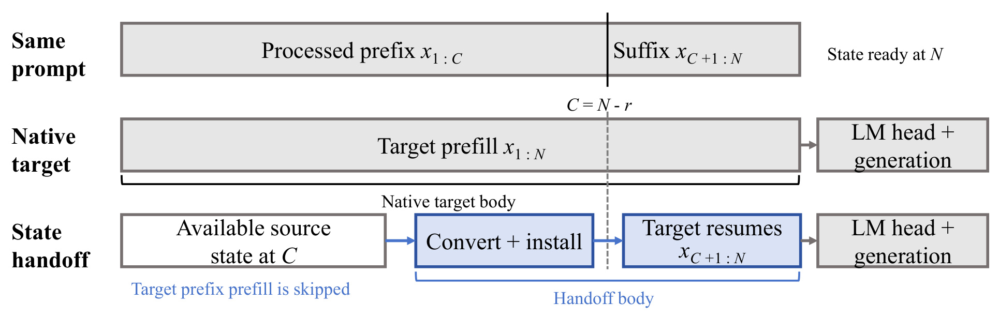
Figure 2 的三行对齐同一个提示，竖线左侧是已处理前缀，右侧是目标必须继续消费的真实后缀。中间行目标模型从首 token 重读，计时在最后一个提示 token 的隐藏态和缓存就绪时结束。最下一行起点已有源状态，先转换并安装，在同一竖线位置恢复目标前向，再在同一逻辑位置结束。图中的 LM head 与生成画在两个括号之外，源的前缀计算也不计入交接计时。矩形宽度只是示意，无法据此估计转换和后缀分别占时多少。读图还要区分固定后缀和生成续写，前者来自原始提示，目标没有使用此前未发生的生成信息来做交接。保留后缀也让接手过程有真实输入驱动原生状态更新。如果服务在收到这轮请求后才执行源预填充，源成本仍出现在这次请求时钟里。如果源和目标不在同一设备，额外的队列、搬运和进程间同步也应放在服务计时里。论文比较的是从可用状态到目标前向主体完成的替代路径，这个边界可以解释模型内部计算能省多少，实际可观测首字时间则需要另一组对照。对于缓存失效时回退的协议，两条路线共享逻辑终点，方便比较同一输出评分位置。若保留的真实后缀变长，源侧需要转移的历史位置会缩短，同时目标原生处理的 token 增加，因此仅根据总上下文长度不能推断最合算的切点。复现时可固定原始提示和源状态，对同一个逻辑终点分别测转换、安装和后缀，按各阶段的趋势选择延迟与准确率的联合对照。这能明确每一条路径的起点。
FA 映射对目标每个全注意力层离线选择四个有序源层。每一历史位置的键先按源模型位置做逆 RoPE，再按固定的层、头、头内坐标顺序拼接，值沿相同层顺序独立拼接。两套仿射映射以中心化岭回归初始化，偏置不做岭惩罚。有效权重在历史位置之间共享，映射的处理量仍随保留的历史位置数变化。
符号解释：$j$ 和 $i$ 是目标层和历史 token 位置，$z^K$ 与 $z^V$ 是对应源层在该位置拼接得到的特征，$W$ 与 $b$ 分别是键、值各自的权重和偏置。$P_t$ 把向量还原成目标 KV 头布局，$R_{t,i}$ 为目标键施加当前位置的旋转。研究模型每个 256 维键头只有前 64 个坐标参与 RoPE。逆源位置再施目标位置将表征转换与显式位置变换拆开，依然要求输入位置、掩码和切点一致。
2.2 分组 REC 与按槽 Conv
两个主方向的 REC 适配以原生查询和键的 16 个头组为边界。每组源有两个值头，目标有三个。为一个目标 REC 层选定四个源 REC 层，然后在某一个矩阵坐标上，依次抽取每层两个源头的同位置数值，得到八项输入。它们经过一个组内映射后成为目标组三个值头同坐标的值。这个仿射权重跨同一个矩阵的所有坐标复用，允许从多个源层汇总历史，同时保留目标侧矩阵坐标的语义结构。
符号解释：$j$、$g$ 分别标记目标层和原生头组，$a,b$ 是每头递归矩阵的坐标，$x$ 是四层共八个源头值组成的行向量，$G_{j,g}$ 形状为 $8\times3$，$\beta_{j,g}$ 是三维映射偏置，$s^0$ 是三个目标头的基础状态值。$128\times128$ 的矩阵共享组内变换，既不混坐标也不混组。两条方向分别拟合参数，初始仿射权重和偏置之后都能被续写校准更新。
Conv 从该目标 REC 层支撑列表的第一个源层取状态，在 Q、K、V 各自原生组内拟合通道映射。同一套通道权重和偏置用于四个历史槽，各槽的旧新顺序保留。卷积核已经学过按位读取局部历史，若同时改变槽位顺序，目标内部即使拿到同一批投影值也会生成不同的键和值。这个约束让早期误差更容易定位是通道转换偏差还是安装时序错误。
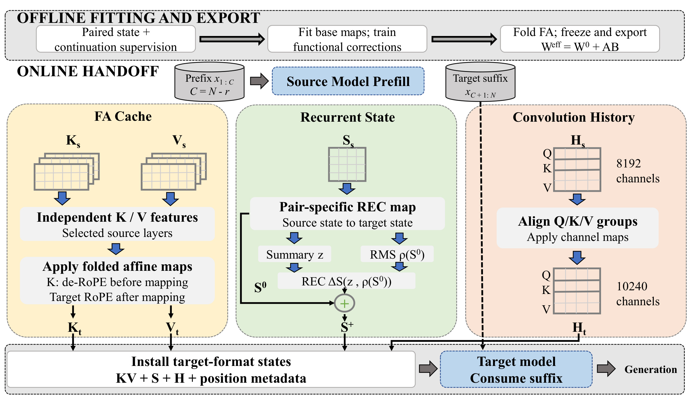
Figure 3 的上条带是离线导出顺序，从同前缀成对状态和续写监督得到基础映射，再学习功能校正，并把 FA 增量折叠后冻结。下面以 4B 到 27B 为例，左支路先拆分键、值，沿保存的源层顺序读入，再施加各自的仿射映射。只有键在映射前去掉源 RoPE，映射后才用目标位置重新旋转。中间支路按目标 REC 层形成基础矩阵，从所有映射层汇总状态摘要，并用每头均方根决定一次修正的幅度。右支路把卷积通道从 8,192 个对齐为 10,240 个，保留每个历史槽位的顺序。三条箭头会在底部合流，因为接收模型的第一步更新会同时依赖这些状态和位置元数据。图中最右侧的生成发生在目标处理后缀之后，图中央的源模型预填充也只是状态来源。该图描述有条件 REC 修正的方向，九十亿参数到二百七十亿参数方向在校准后直接用基础 REC。这样的分支差异很关键，后文两个方向平均保留率不同，无法从单一示意图推断修正模块的强弱。若复现时给三个组件独立打时间戳，必须等最后一项状态装好才开放目标前向。提前消费第一个后缀 token 会在 REC 里留下不可用简单覆盖逆转的写入。FA 则要对照图中左支路确认保存的是训练后的有效矩阵，避免部署时误用仍未折叠的底座或把增量重复相加。源层的输入顺序也需要作为状态协议的一部分固化，否则三个分支都能生成尺寸正确的输出，但值会沿模型错误的头组进入后续计算。图里使用同一条后缀分隔线，将这些并行数据转换约束为目标模型的一次状态提交。
2.3 续写校准、条件修正与权重折叠
基础映射初始化后，目标以自己的冻结模型权重在转移状态上消费后缀，训练梯度穿过目标前向回到适配器。REC 初期校准同时考虑输出分布前向 KL 与归一化重构误差，后期加入自然文本续写以及候选分布 KL、中心化候选分数的均方误差。多 token 选项各自从相同提示状态的独立分支开始，用 token 对数概率之和形成候选分数，避免前一个选项写过的状态影响下一项。这样训练能直接惩罚影响决策的映射方向。训练期间保持源层支撑列表和组内布局不变。
4B 到 27B 另有一次状态条件校正。从 48 个映射 REC 层取行、列均值，按目标层和头的顺序组成全局摘要，阻断摘要路径梯度。以 256 维为块交替正负累加，按块数平方根缩放，再作无可训练仿射参数的层归一化。仿射层及双曲正切给出各层、头和残差项的系数，每头以自身 RMS 缩放两个秩一外积。
符号解释：$S^{0}$ 和 $S^{+}$ 分别是条件校正前后的 REC 状态，$h$ 是头，$k$ 是低秩残差项，$d=128$ 是矩阵边长，$\gamma=0.1$，$k_R=2$。$\rho$ 是该头基础矩阵的均方根，计算尺度时停止梯度。$c$ 由当前摘要生成，$\bar u,\bar v$ 是各自归一化的可训练方向。秩至多为二的是新增残差，基础矩阵保持完整。校正只在交接时计算一次，接下来的更新由目标模型自己完成。系数和尺度都依赖输入，所以无法预先合入固定仿射权重。
随后冻结 REC、Conv 与条件校正器，只学习 FA 仿射权重增量。采用低秩因子的乘积，随机初始化左因子并把右因子置零，初始映射和已有模型一致。每个键、值映射分别训练，基础映射和偏置固定，最终导出时提前合并。
符号解释：$W_j^{0,K/V}$ 是对应目标层键或值的底座权重，$A_j^{K/V},B_j^{K/V}$ 是各自秩四增量的两个因子，$W_j^{K/V}$ 是部署使用的有效矩阵。合并后在线对每类状态只执行同一形状的仿射变换。增量低秩约束只控制可学习变化，部署时仍保留完整基础权重。它和前面的条件 REC 有不同的上下文依赖，因子乘积固定，因此可离线折叠。
对条件校正及最终 FA 阶段，自然文本用 32 个续写预测位置的前向 KL，数学使用 32 个正确解答预测位置并加权重 0.25 的 token 交叉熵，多选使用完整候选分布 KL 与同权重的正确选项交叉熵。四十亿源的最终 FA 数学监督前八个位置由冻结的已有转移方案提供，后 24 个位置使用原生目标。九十亿源的 32 个位置均用原生目标。两方向的教师配方不同，限制了把结果仅归因于源模型参数量的解释。在线执行导出的适配器，把三类状态转换到目标格式，按所配方案应用 REC 修正，然后开始原生后缀计算，最后进入词表输出或生成。
3. 实验结果
3.1 任务保留率和准确率
主结果以 Qwen3.5 4B、9B 为源，目标都是 27B。使用两张 80 GB NVIDIA A800，批大小为一，模型权重与 FA 缓存用 BF16，REC 用 FP32。ARC-C、HellaSwag、WinoGrande 用零样本提示，MMLU 以各学科开发集五个演示样本提示，GSM8K 以八个带解题过程的演示样本提示。测试用 ARC-C 的 1,172 例、MMLU 的 14,042 例和 GSM8K 的 1,319 例，以及 HellaSwag 和 WinoGrande 分别 10,042 例和 1,267 例完整验证集。模型接手的质量用两个相关口径报告，其中 Table 2 是对原生 27B 的相对保留率。
符号解释：$m$ 是被评估的交接方法，$t$ 是具体任务，$T$ 是该方向的原生目标模型，$s_{m,t}$ 和 $s_{T,t}$ 是同任务的原始得分。五个任务分别除以自己的参照后再等权平均。这个平均既不按题数加权，也不等同于先算五任务准确率均值再相除。
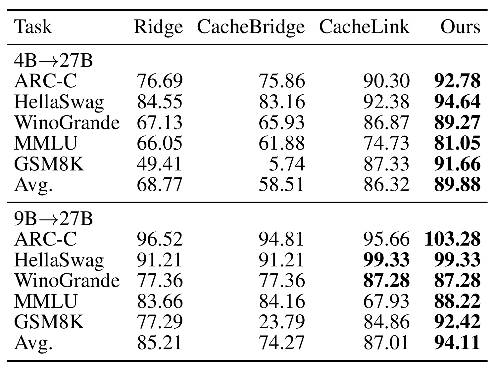
Table 2 的上下两组分别以四十亿和九十亿源模型交给同一个 27B 目标，列内是不同映射方案。Ridge、CacheBridge、CacheLink 都是作者为此研究实现的完整混合状态扩展。对于 4B 方向，四个方案共享 Conv 对齐，前两者用闭式 REC 映射，后两者会做功能校准。HST 在五项的保留率点估计都超过 CacheLink，平均从 86.32% 到 89.88%，相差 3.56 个百分点。GSM8K 从 87.33% 到 91.66%，MMLU 从 74.73% 到 81.05%，后者差距较大。换成 9B 方向，HST 的均值 94.11% 比 CacheLink 的 87.01% 高 7.10 个百分点。两套方案在 HellaSwag 都为 99.33%，WinoGrande 都为 87.28%，平均差距部分来自 MMLU 的 67.93% 与 88.22%。因此，一个用 MMLU 均值估算所有使用者收益的结论会高估已持平的任务。另一方面，9B 方向的 ARC-C 为 103.28%，这是对原生目标的相对分数，并非每题都答对。个别任务超过原生目标也不足以说明状态交接能稳定提高该模型的上限，表中只展示点估计。指标值还依赖混合基线实现，旧论文的原版主要转换 FA，不能将该表直接当作原论文公开系统的同环境复测。尤其 4B 方向的 CacheLink 采用原生目标教师与金标候选分支，而本文有自己的多选监督和数学教师调度，比较支持组合方案在此设置的优越性，对训练配方和适配器构造的独立贡献仍需单变量对照。实际选型时还要考虑候选链路的任务组成是否接近这五种等权任务，不能把不同领域的失败用算术平均抵消后直接上线。表中 Ridge 与 CacheBridge 的整体次序还会随着目标任务变化，前者在两个方向的数学保留率都更高，后者在九十亿方向的 MMLU 则略高。这个差异表明不同转换的误差会集中在不同任务上，排序策略若只用单一平均选择缓存适配器，会丢失对重要领域单独设门槛的机会。
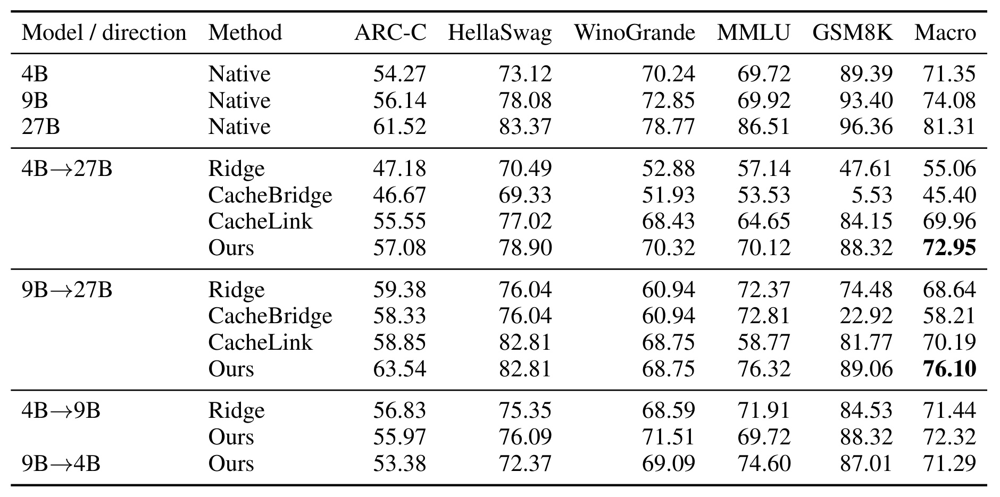
Table 3 换成原始准确率，把 4B、9B、27B 直接运行和交接放在一起。原生 27B 五项等权为 81.31%，HST 由两个源接手分别为 72.95% 和 76.10%。均值有清晰提升空间，离原生 27B 分别仍差 8.36 与 5.21 个百分点。9B 到 27B 在 ARC-C 为 63.54%，原生 27B 为 61.52%，绝对差 2.02 个百分点，恰好解释为何相对保留率能超 100%。同一方向 WinoGrande 为 68.75%，低于 27B 的 78.77%，也低于 9B 原生的 72.85%。GSM8K 的 HST 为 89.06%，仍低于直接运行 9B 的 93.40%；4B 到 27B 的 88.32% 同样低于原生 4B 的 89.39%。另一方面，4B 方向的 MMLU 70.12% 略高于原生 4B 的 69.72%，却与原生 27B 的 86.51% 相距较远。对路由系统来说，需要同时建立继续用源、交接目标与原生目标三条路线，特别是升级以解数学题为目的时，选择交接未必更划算。还可以从 Table 3 检查 CacheBridge 两条数学分数仅 5.53% 和 22.92%，这是完整扩展与配置有关的对照结果，不能以此否定原工作在纯全注意力网络的价值。附录的绝对分数按任务等权，表头的 Macro 与前表的 Avg. 只在读法上类似，各自的除法顺序不同。原生 27B 的多数任务更强，正因为不同任务的原生分数有差异，按相对保留率加权等价于给分母较小的任务相对更多权重。任何汇报若只保留一个平均，就很容易漏掉前述数学和指代上的负例。另一个实际决策是用这张表估计继续用源的机会成本。4B 源的等权平均 71.35%，交接后 72.95%，提升 1.60 个百分点。9B 源从 74.08% 到 76.10%，提升 2.02 个百分点。对照原生目标相对源的能力空间，交接只实现了其中一部分。平均差异还受选择题与开放数学题组合影响，服务可以先根据用户请求的任务类型预测三条路线的风险，再根据命中状态和长度选择是否跳过原生重读。比较时应沿用两者相同的任务集与原始评分。
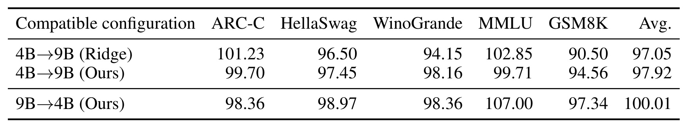
Table 4 用各方向自己的目标作分母，4B 到 9B 用原生 9B，反向用原生 4B。4B 到 9B 的 HST 平均保留 97.92%，略高于 Ridge 的 97.05%。提升没有覆盖每一项，ARC-C 从 101.23% 变为 99.70%，MMLU 从 102.85% 变为 99.71%，但 GSM8K 从 90.50% 提高到 94.56%。反向平均为 100.01%，其中 MMLU 为 107.00%，数学为 97.34%，若只看平均，很难察觉一项高分抵消了其他下降。反向表只给作者方法，无法沿用正向的 Ridge 对照。这个相同布局子实验为理解接口难度提供背景，也保持了单独校准的条件。头数和槽位形状兼容只能降低转换复杂度，仍要处理参数学习出的表示差异。对用户请求的模型切换而言，缩小目标通常是成本优化，扩大目标通常希望恢复能力，两者的正确比较对象因此需要随方向变化。论文只给这些方向的点估计，没有说明兼容布局对所有尺寸组合能达到相同保留率。尤其反向切换没有公开同配方基线，若部署主张是小目标可稳定替代大目标，就要在实际任务集上同时测原生两端和转移后的目标。还应检查任务退化是否落在成本敏感分流前已经筛出的请求上。
3.2 恢复与组件消融
论文提供三类容易混淆的诊断。一类在固定辅助配置上学习局部重构残差，另一类对已经训练完的交接检查点开关模块，第三类是用目标的真实原生状态替换指定组件。它们的输入和判定指标不同，能够互相解释，不能共享数值分母。局部重构探针最直接地说明用状态误差选检查点会遇到什么问题。
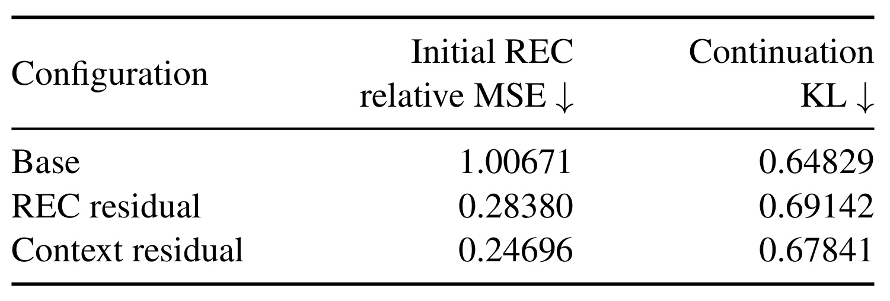
Table 1 用参与候选选择的 32 个开发文档测试，文档内取 128、512、2048 三档前缀，后面分别续自然文本、重访和转移话题三种分支，形成每文档九个条件。三种方案在固定 token 序列上测同一组指标。左列是初始 REC 相对均方误差，右列是整个目标模型继续处理后的输出 KL，均为越低越好。Base 的两个指标为 1.00671 与 0.64829。只用源 REC 摘要预测残差系数后，初始相对误差降到 0.28380，续写 KL 却升到 0.69142；把源 FA 与 Conv 的摘要也交给重构器，误差进一步降到 0.24696，续写 KL 仍为 0.67841，高于 Base。两个候选共用残差基底，用岭回归预测系数。它们是重构目标下的探针，和方法中通过冻结目标训练的条件修正器不同。局部指标对整个矩阵坐标计分，但输出偏差依赖后缀中实际读写方向，优化数值较大的维度可能同时干扰本来仍可用的其他方向。前缀长度和话题分支用于覆盖多种输入模式，表里只报聚合值，无法从中知道哪个具体组合最容易恶化。因为开发样本参与过候选选择，这是一项探索性证据，不能作为预测线上效果的独立验证。工程上可以把这张表复现为固定样本上的双指标对照，初始误差帮助定位校准数值，后续输出分布与任务指标负责确定可接手性。对同一批文本将全部状态换回原生目标再量一次，可以检验计分偏差是否真由映射引起。若只有均方误差改善，仍需观察状态经过多轮原生更新后是否产生显著长尾。选择稳定性还可用多个独立切点复核，同时记录误差沿后缀的增长形态。表里的平均下降只描述状态大小归一化后的总体重构质量。
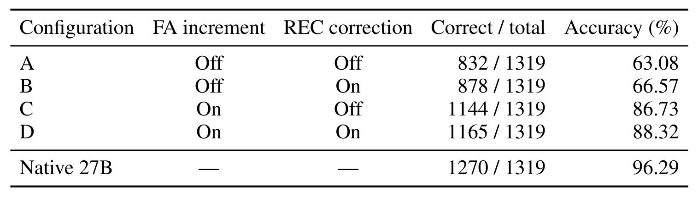
Table 5 在一个辅助 4B 到 27B 检查点固定基础 FA、已校准 REC 与 Conv，只开关最终 FA 增量和条件 REC 修正。两项关闭为 832/1319，即 63.08%；只开 REC 为 878/1319，即 66.57%；只开 FA 为 1144/1319，即 86.73%；两项开启为 1165/1319，即 88.32%。在已有 FA 增量时，REC 再多答对 21 道，约 1.59 个百分点；无 FA 增量时，REC 多答对 46 道，约 3.49 个百分点。FA 在没有 REC 修正时带来 312 道额外正确答案，有 REC 时带来 287 道，边际结果依赖另外一个开关。由此可以说在这一检查点和评估中，最终 FA 增量关联了较大的点估计增益；无法假定两个模块改善的是不同题，也无法从总题数反推出它们各自在同一批题的救回和损失。各开关组合没有重训，部署开关可解释为卸载已训练组合的一部分，单独训练另一个组合可能得到不同结果。这里原生目标为 1270/1319，即 96.29%，主比较为 96.36%。完整组合的 88.32% 与主表相同，也不能因此把主表与附录当成相同检查点，或拿 96.29% 去重算主表保留率。把该设计迁移到自己的服务时，需要同时保存具体实验版本和题级预测，才能分清质量退化来自某个模块被拿掉，还是重新拟合后改变了其余适配器。若线上端点对数学与多选任务分开路由，这张数学开关表仅能为对应分支提出待检假设。对比论文主结果时，注意辅助实验只改动已经训练完成的组件开关，原始 CacheLink 的做法则是重新拟合相应映射。前者回答当前配方能否直接卸掉某个模块，后者回答同数据下哪套方案可用。一次开关导致的损失没有给出跨训练的可替换性，也未排除该选题对某阶段监督更敏感。实际维护检查点时可以保存这组题号的通过集合，进一步量化两种适配分别救回哪些错误。
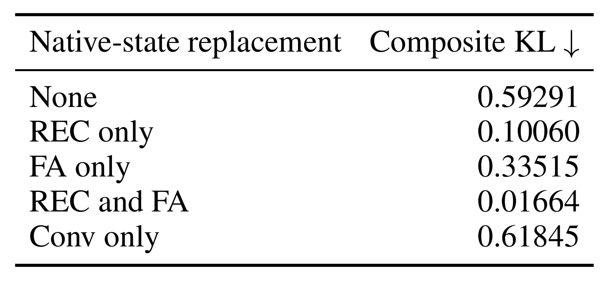
Table 6 在 18 个文档的固定辅助转移方案上，把指定组件替换为相同前缀的目标原生状态，其他状态保持转移结果。复合 KL 等权包含提示末尾的输出 KL 与之后八个位置平均输出 KL。基线 0.59291，只换 REC 为 0.10060，只换 FA 为 0.33515，一起换 REC 和 FA 为 0.01664，只换 Conv 反而为 0.61845。一个可靠的读法是，改变已经转移的状态组合可以大幅改变后续分布，恢复 REC 或 FA 的作用取决于另外几类状态仍是什么值。将两种单换效果相加来估计联合替换没有依据。单换 Conv 结果变差也不能理解成 Conv 不应交接，因为用原生卷积历史搭配有误差的 REC、FA 可能破坏这套组合原有的补偿。原生状态替换依赖目标读过前缀，正是部署试图绕过的计算，因此它只用来诊断。这个测试与 Figure 1 的原生 9B 上先扰动再恢复不同，两个实验改变的模型、路径和干预时刻都不同。调试时可从第一种方法确认误差写入哪类状态，再从第二种方法看映射后的哪类状态替换最能拉回质量。进一步比较只换 REC 和只换 FA，可以看出这个诊断里 REC 对复合 KL 的恢复更大。它与附录 GSM8K 开关里 FA 增量的准确率贡献较大并不冲突，因为一者使用真实状态替换，一者使用已学增量，分别回答理想状态与当前模块能恢复多少。复合 KL 与答对题数也没有一一对应关系。两个指标可以在同一份分层重放中补充使用，先选使输出明显漂移的输入，再区分某一类状态的误差，最后看这些样本的任务错误是否来自相同路径。没有题级或逐位置分布时，表里数字只能指导复现优先顺序。
附录 E 又给 Figure 1 加了一个更强的恢复对照。第 4 步之后将 REC、Conv 与 FA 全换回原生状态，16 个切点每个续 28 个后续位置，共 448 次测量，作者报告原生 logits 逐位相同、KL 全为零。只恢复 REC 与 Conv 时，平均输出 KL 的恢复后峰值出现在第 19 步，为 0.01039322。编号为 2 的打包块在 128 切点单个案例 KL 为 0.13518570，占均值总量的 81.29%。其余 15 案例均值约 0.00207372。这个附录用精确复原与一个长尾案例解释图上的残余峰，说明在过去受扰动步骤写入的 FA 键值能延续偏差，也说明单个异常样本足以抬高聚合曲线。这个控制的零 KL 不代表训练出的交接适配器能做到同样等价。
3.3 交接延迟与校准成本
作者用合成上下文独立测了 64 至 16K token 的性能。目标原生路径重新执行完整提示。交接路径在已有源状态的前提下，计算转换、组装和所需拷贝、可选 REC 校正、目标后缀前向，直至目标缓存与最终隐藏态可用。源模型预填充、词表输出投影和答案评分或生成都没有进入该时钟。它因此与线上首 token 延迟有交集，但只覆盖其中一段。
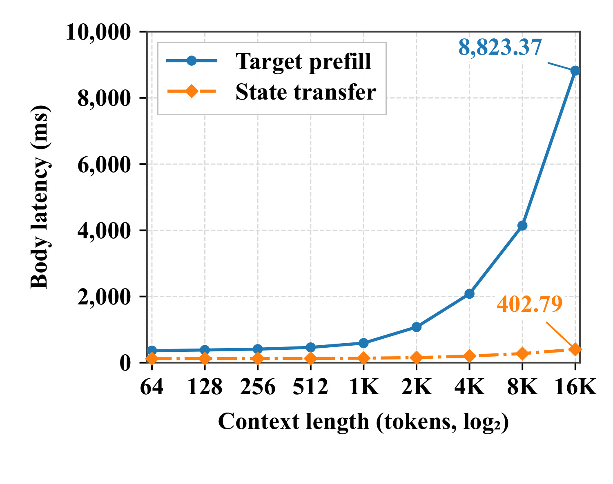
Figure 4 横轴是输入长度，以二为底取对数，纵轴是主体耗时的毫秒数。蓝线是目标原生预填充，橙线是已有源缓存的状态交接，两条线都延伸至目标隐藏态和缓存可用。在 16K，蓝线为 8,823.37 毫秒，橙线为 402.79 毫秒，即 21.91 倍。这两个数字说明可用前缀缓存让目标省掉多数旧 token 上的模型前向；橙线并没有真的水平。交接端还要处理每个位置的键和值，短卷积与递归状态占用固定，逐 token FA 处理与搬运在长前缀时仍有增量。两条线在低长度段看起来都贴近横轴，纵轴范围由长输入决定，短请求应结合 Table 7 的原始数字读。分开看首尾能够区分固定开销和随长度增加的开销。每次请求的实际节省还要考虑源状态是否命中、可否在目标所在设备重用，以及交接是否比原生目标处理更容易排队。这张合成输入曲线没有负载分布、尾部延迟或共享缓存驱逐的对照，也没有在同一输入上测量任务结果。把其端点比值作为流量容量指标，会把假定的缓存命中率和服务层开销也错误归入作者结论。橙线在长端的相对变化比图形第一眼看起来更大，实际从一百余毫秒升到四百余毫秒。如果接收端和源分卡，长端需要传入的缓存字节也会上升。论文条件下已经出现明显长度依赖，在链路更重的系统中还要检查这部分是否重新成为瓶颈。为解释收益，应将同长度条件下的目标重复前向和转换分开计时。例如模型路由如果在排队期间无法持有源状态，就应按缓存未命中的完整路径单独计时。
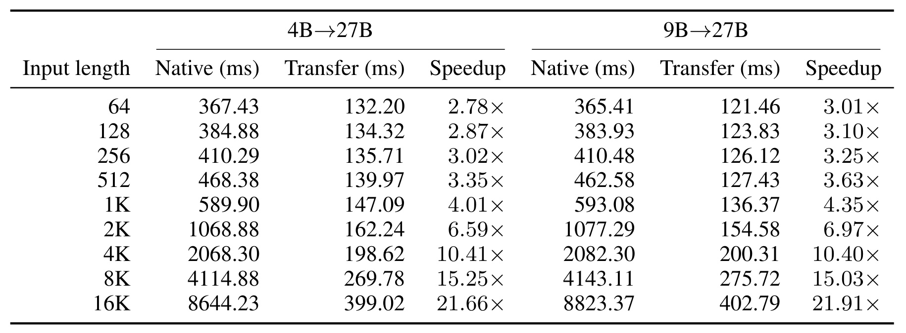
Table 7 每组给原生主体、交接主体和两者相除的倍数，两个方向分别计原生参照。64 token 时，4B 方向从 367.43 毫秒到 132.20 毫秒，9B 方向从 365.41 到 121.46，比分别为 2.78 与 3.01。2K 时两条交接路线为 162.24 和 154.58 毫秒，原生参照在 1,068 至 1,078 毫秒附近。8K 时 4B 路线为 269.78 毫秒，9B 为 275.72 毫秒，后一方向的交接点估计反而略长。16K 时 4B 路线为 399.02 毫秒，9B 为 402.79；相对各自参照的比值为 21.66 和 21.91。这说明比较跨路线要核对绝对毫秒，分母较大的路线即使绝对耗时略高，也可能有更大的倍数。论文不让 4B 和 9B 强制使用同一个原生计时点，因此不能用两列的比例证明某条适配结构固定比另一条快。两条路线在这些实验点都随长度增加，符合需转换每个保留的全注意力历史位置这一结构。把单请求计时推广到并发服务仍需量化同时保留源和目标状态时的内存峰值、转换的同步范围以及额外拷贝是否能与其他请求重叠。若线上只有部分长对话有可复用的源前缀，这些长度分层数字可以用来决定在哪里建立对照，收益需要再按实际命中分布聚合。这里作者对质量使用公开基准，对延迟使用合成输入，两个结果应当分别展示。这个表还提示，比较不同长度的倍数时最好同时看节省的毫秒数与占用的资源。短输入的原生主体大致几百毫秒，固定的调度或组装成本会消耗可节省时间。随着前缀加长，省掉的模型计算占比上升，但若长请求切换前已等待大量源计算，那么用户实际收益还要减去这段路径中的新增工作。记录命中率与源模型的每次处理成本，能让表中的体感推断落到可核验的请求口径。
离线基础拟合方面，附录披露 4B 到 27B 用 500 段长度为 1,024 的 FineWeb-Edu 序列，FA 与 REC 的每个目标层都取四个有序源支撑，Conv 的四个历史槽共享权重。这个数字是基础拟合输入，后续训练有不同的监督配方。只拿最终 FA 阶段的训练时间衡量所有校准投入，也会漏掉最先的数据准备和基础配对。
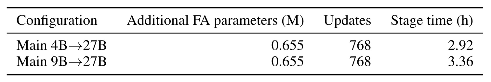
Table 8 的两行分别报告两个主方向最终 FA 阶段的新增参数量、更新步数和耗时。两条都是 0.655M 额外参数、每条 384 个训练单元与 768 次更新，耗时分别为 2.92 与 3.36 小时。这里的参数量指学习 FA 增量用到的低秩因子，部署时两个因子乘积已加到底座，在线不需要把两步低秩矩阵乘法串在逐位置缓存映射之后。阶段时钟排除教师准备、之前的状态校准和评估，表里未报总训练开销。4B 路线还有一个状态条件 REC 校正训练，两条路线即使最终 FA 阶段参数一样，整体计算或复现资源也可能不同。服务使用多个模型检查点时，应针对每个部署对重做状态布局映射的兼容性验证。目标换权重但不换张量形状也可能改变输出分布，已有矩阵不能仅凭可加载就视为跨版本可用。这个附录给出了一个具体离线阶段的规模，适合用来估算重训该阶段所需资源，而论文未提供所有配对和所有前置阶段的累计工时。阶段耗时还受冻结目标参与续写训练的计算影响，低秩参数量本身无法预测时长。增量学习虽只更新映射器，训练仍经过目标模型并使用不同监督分布。两行在相同步数、相同附加参数量下有近半小时差别，可见至少需要把训练过程与模型配对一起记录。若要评估一个新版本能否及时更新适配器，除了最后一轮，还应单独追踪配对数据准备、初始映射、递归校准、离线导出和发布前回归测试。最后的在线测速也应当在增量确已合并的矩阵上进行，避免测试时误把训练结构的开销混进去。
4. 总结
HST 把跨模型接力拆成两项可以分别验收的工作。先用相同前缀构造目标格式的三类状态，再让冻结目标真正消费后缀，观察预测分布和任务评分。这比拿局部矩阵重构指标单独决定能不能切模型更接近系统需求。原生恢复实验显示短卷积扰动会写进 REC，辅助重构表又给出 MSE 降而 KL 升的具体反例。两个证据说明缓存兼容是一个动态问题。另一方面，绝对准确率表保留了若干交接后不如继续用源的数学和指代结果，决定升级策略时应当把这些反例纳入对照。
工程上最值得照搬的是一致的状态边界。为同一前缀导出键值、递归矩阵、卷积槽和位置元数据，附加源与目标权重版本、映射版本、tokenizer 与格式版本，便于在安装前一次校验。服务可以先比较两条目标路径在同一组真实提示上是否到达可用状态，再把继续用源也纳入同一次重放。若下游是重排或工具路由，比较候选分布以及次序改变，比只看若干正确输出能更早发现接手后的偏移。随机长文本可压性能，带证据定位与历史冲突的真实输入可测任务质量，两者需要在同一长度层对齐后才能判断哪种业务值得重用前缀。
局限需要按证据拆开。第一，论文验证的是 Qwen3.5 家族中使用 Gated DeltaNet 的模型，KDA 或含专家路由状态的其他架构缺少对照。第二，训练映射按模型配对，4B 和 9B 的条件校正及数学教师配方不同，较大的源对应较高保留率这一现象没有单独控制适配器和数据。第三，五个公开基准对复杂多轮长上下文和领域工具调用覆盖有限，交接后的自由生成可能进入训练续写未覆盖的状态。第四，计时假定源缓存已经可用、批一、特定硬件，并与任务实验分开，无法推出同一请求的延迟质量边界。第五，作者原文未提供本轮已核验的独立实现，复现仍要从原文恢复模型版本、基线扩展和调参细节。第六，部分组件结论来自选过候选的开发文档或辅助检查点，适合定位失效模式，外推到所有输入需独立样本。
若开展复现，可以先只实现三种状态的保存、安装和原生全恢复对照，固定后缀验证逻辑边界正确。只要全部状态恢复后仍有 KL，先排查位置和数据类型，再考虑训练问题。第二步在同一模型对上保留闭式拟合、REC 校准、条件修正与 FA 增量的独立检查点，测固定续写、自由生成与下游决策，观察是不是只对其中一个口径有效。第三步用真实长会话按缓存状态命中和模型配对切片，分别记录读取源状态、目标状态组装、目标后缀、词表头和生成时钟，联同任务准确率比较原生目标、交接目标和继续用源。三组复现结果能把任务应不应该升级与升级后能不能省重读分开。
对推荐链路，潜在价值是让共享用户长前缀的两级模型复用已做的计算。要注意商品候选往往只在第二级确定，任何改变前缀内容和次序的策略都会改变应恢复的状态。可将用户历史严格限制为两个模型都看到的公共前缀，并把候选及当前任务意图留给目标后缀，然后检查换模型后对低频兴趣、近期行为和否定偏好的候选排序是否漂移。这样，缓存转换的技术假设与用户是否看见更合适的内容都可以在各自的口径下验证。